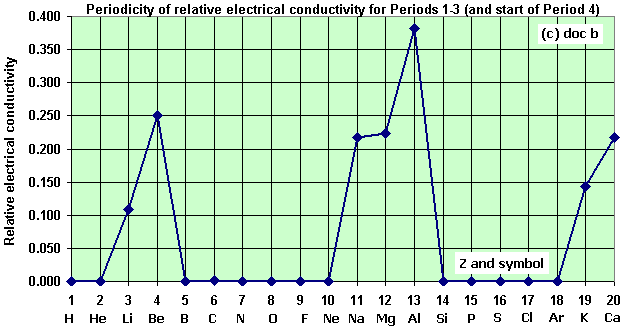

What is periodic table?
The arrangement of the chemical elements into periods (horizontal rows) and groups (vertical columns) is called the periodic table.
What is its usage?
The periodic table is an essential part of the language of chemistry. It has much in common with a thesaurus, providing a guide to similarities and differences among the elements. From the way elements are organized in the periodic table, chemists can predict their behavior and write chemical formulas of compounds using just a few general guidelines.
Who invented it?
The discovery that elements could be arranged in a periodic table was made by Russian chemist Dmitri Ivanovitch Mendeleev (1834–1907).
History and developments
1669 - Hennig Brand invented the Philosopher's Stone, which could turn metals into pure gold. He also discovered phosphorus.
1680 - Robert Boyle also discovered phosphorus without knowing about Hennig Brand's discovery.
By 1809 about 47 elements had been discovered and named. Scientists began to see patterns in their atom structures.
1863 - John Newlands organized the 56 then known elements into eleven separate groups based upon their atom structure.
1869 - Dimitri Mendellev used John Newlands' grouping and organized the elements into what is now known as the periodic table. He used the atomic mass as the primary characteristic to decide where each element belonged in his table. The elements were arranged in rows and columns. He even left spaces for elements to be discovered because of the pattern he saw once he started organizing those elements known at that that time.
1886 - Antoine Becquerel discovered radioactivity.Ernest Rutherford named three types of radiation: alpha and betaand gamma rays.Pierre and Marie Curie began their work and discovered radium and polonium. They also discovered that beta particles were negatively charged.
1894 - Sir William Ramsay and Lord Rayleigh discovered the noble gasesand they were added to the periodic table as group O.
1897 - J. J. Thomson discovered electrons which were small negatively charged particles.John Sealy Townsend and Robert A. Millikan further investigated electrons and were able to determine their exact charge and mass.
1900 - Antoine Becquerel discovered that electrons and beta particles were the same thing.
1903 - Ernest Rutherford decided that radioactivity is what caused atoms to be broken down.
1911 - Ernest Rutherford and Hans Geiger discovered that electrons moved around the nucleus of the cell's atom much like planets orbit the sun.
1913 - Niels Bohr discovered the electrons' orbits and that there were more electrons in the outer orbits than in the inner orbits. He also saw that radiation was emitted when an electron would jump from one orbit to another.
1914 - Ernest Rutherford discovered protons in the nucleus.Henry Moseley labeled the elements with atomic numbers based upon the number of electrons in an atom rather than on their atomic mass.
1932 - James Chadwick discovered neutrons and identified isotopes.J. D. Cockroft and Ernest T. S. Walton worked together in splitting the atom when working with lithium which they bombarded with protons. The lithium nucleus was divided into two helium nuclei.Ernest O. Lawrence, Milton Stanley Livingston and Milton White worked on the first cyclotron at the University of California in Berkeley.
1945 - Glenn Seaborg identified lanthanides and actinides which are elements with atomic numbers higher than 92 and are placed in a separate section on the bottom in today's Periodic Table.
Periodic table with legends
The elements in the periodic table are classified as metals,non-metals and metalloids.Metals are generally shiny, malleable elements that conduct heat and electricity well. Most are solid at room temperature. In reactions metals tend to form positive ions. Metalloids have properties that are in between those of metals and non-metals.

In the periodic table,the metalloids,which is Boron(B) ,Silicon(Si) ,Germanium(Ge) ,Arsenic(As) ,Antimony(Sb) and Tellurium(Te),divide the whole table into two parts.The left side of them are metals(except Hydrogen) ,and the right side of them are non-metals.
Trends and similarities
Ionization energy
Ionization energy is the energy required to remove an electron from a neutral atom in its gaseous phase.In the same period,the ionization energy of the elements generally increases from left to right. In the same group,the ionization energy of the elements generally decreases from top to bottom. The noble gases have very high ionization energies because of their full valence shells. Helium has the highest ionization energy of all the elements.Also,ionization energies decrease as atomic radius increase.

Melting point
Melting points is the amount of energy required to break a bond(s) to change the solid phase of a substance to a liquid. Melting points are varied and do not generally form a trend across the periodic table. But certain conclusions can be drawn from the graph below.
Metals generally possess a high melting point.
Most non-metals possess low melting points.
The non-metal carbon possesses the highest boiling point of all the elements. The semi-metal boron also possesses a high melting point.

Atomic Radius
The atomic radius is one-half the distance between the nuclei of two atoms. This distance is measured in picometers. Atomic radius patterns are observed throughout the periodic table.Horizontally,atomic radius decreases from left to right in a period.Vertically,atomic radius increases from top to bottom in a group.

Chemical reactivity
Metals:Reactivity increases as a group going down because the farther down a group of metals going, the easier it is for electrons to be given or taken away, resulting in higher reactivity.Reactivity decreases as a period going across because they have more electrons to get rid of, and that needs more energy.
Non-metals:Reactivity increases as a group going up because the higher up and to the right atoms are, the more exchange of electrons there is.Reactivity increses as a period going across because the closer the outer shell get to full the more motivated to do.

Ion charge
All family IA members will tend to lose exactly one electron when they are ionized. The entire family forms +1 ions. While there are times that hydrogen acts as if it is a metal and forms +1 ions; however, most of the time it bonds with other atoms as a nonmetal. In other words, hydrogen doesn't easily fit into any chemical family.And each of the elements in IIA family will lose two valence electrons and form +2 ions in order to have an electron configuration like the closest noble gas.Other metal elements' charges can be predicted using the same patterns.
Family VA nonmetals at the top will gain electrons to form negative ions. Family VIA nonmetals will gain two electrons to obtain an octet thus forming a -2 ion. Family VIIA will form -1 ions.Family VIIIA is the noble gases and has no tendency to either gain or lose electrons so they do not form ions.The charges ions form can be shown in the following table. Many of the transition elements can form ions with different charges.

Conductivity
Electrical conductivity is the measure of the amount of electrical current a material can carry or it's ability to carry a current. Electrical conductivity is also known as specific conductance. Conductivity is an intrinsic property of a material.Conductvities are varied and do not generally form a trend across the periodic table. But certain conclusions can be drawn from the graph below.
Most of the metals are conductive.
Most of non-metals are nonconductive.
The conductivities increase as theatomic numbers go up.

The ordering of elements
The periodic table is an arrangement of the elements in order of their atomic numbers so that elements with similar properties appear in the same vertical column or group.A period is a horizontal row of the periodic table. There are seven periods in the periodic table, with each one beginning at the far left. A new period begins when a new principal energy level begins filling with electrons. They are pulled out in order to make the table itself fit more easily onto a single page.A group is a vertical column of the periodic table, based on the organization of the outer shell electrons. There are a total of 18 groups.The official system for numbering groups would be a simple 1 through 18 from left to right. The atomic number of an element is the number of protons in the nucleus of each atom of that element. An atom can be classified as a particular element based solely on its atomic number. The periodic table displays all of the known elements and is arranged in order of increasing atomic number. In the periodic table,an element's atomic number is indicated above the elemental symbol.
Metallic characters
Metallic character refers to the level of reactivity of a metal. Metals tend to lose electrons in chemical reactions, as indicated by their low ionization energies. Within a compound, metal atoms have relatively low attraction for electrons, as indicated by their low electronegativities.The most reactive metals would reside in the lower left portion of the periodic table. The most reactive metal is cesium.Francium is below cesium in the alkali metal group, but is so rare that most of its properties have never been observed.
Reactivity of metals is based on processes such as the formation of halide compounds with halogens and how easily they displace hydrogen from dilute acids.The metallic character increases as you go down a group. Since the ionization energy decreases going down a group (or increases going up a group), the increased ability for metals lower in a group to lose electrons makes them more reactive. In addition, the atomic radius increases going down a group, placing the outer electrons further away from the nucleus and making that electron less attracted by the nucleus.

As we move across the periodic table, there is an increasing tendency to accept electrons (nonmetallic) and a decrease in the possibility that an atom would give up one or more electrons.